CS 184: Computer Graphics and Imaging — Project 3: Path Tracer
Name: Jameson Hearn
Website URL: https://cal-cs184-student.github.io/hw3-jph-writeup/
GitHub Repo: cal-cs184-student/hw3-jph
Overview (3 Points)
In this project I built a physically based path tracer in stages. It starts by generating camera rays and intersecting them with triangles and spheres. A bounding volume hierarchy (BVH) then speeds up those intersection tests enough that large meshes render in well under a second. On top of that geometry core I added direct lighting (both uniform hemisphere sampling and light importance sampling), full global illumination with recursive bounces and Russian Roulette termination, and adaptive sampling that stops working on a pixel once its estimate has converged. For extra credit I made BVH traversal iterative and added a timelapse capture mode to the GUI.
Problems I ran into and how I solved them:
-
Bug in triangle
has_intersection. When I reviewed my intersection code, I found thatTriangle::has_intersectioncomputed the barycentric coordinatevwith the wrong vector (it used the formula fort).intersect()was correct, and every ray in my pathtracer goes throughintersect(), so no renders were affected. I fixed it so the two functions agree. -
Emission showing up in single-bounce renders. My first version of
est_radiance_global_illuminationalways added zero-bounce emission. That put the light fixture into every unaccumulated (-o 0) image for m ≥ 1, even though those images should contain only bounce m. I changed it to skip emission in that mode and re-rendered the m = 1–5 images. -
Infinite recursion in BVH construction. A midpoint split can put every primitive on one side
when centroids cluster together, which would make the recursion run forever. I fall back to a median split
with
std::nth_element, which always makes progress. -
Getting comparable benchmark numbers. My first timing runs mixed settings (some used
adaptive sampling and multiple bounces) and wrote several scenes to the same log file. I reran everything
with identical flags and a separate log per scene. To get no-BVH times I added a temporary
NO_BVHenvironment switch that turns the whole scene into one leaf.
What I learned
The geometry parts (ray generation, intersection, BVH, etc) tend to fail in obvious ways. The lighting code was harder because a wrong estimator can still produces a generally correct looking image. I learned to check each term against the math instead of trusting how a render looked. Direct lighting helped to apply practical understanding to Monte Carlo: hemisphere and light sampling estimate the same integral, and where the samples go determines how noisy the final result is. Global illumination definitely had the steepest learning curve since its recursion, bounce handling, and Russian Roulette all had to agree for the image to be correct.
Part 1: Ray Generation and Scene Intersection (20 Points)
Ray generation and primitive intersection
Rendering starts in PathTracer::raytrace_pixel. For a pixel at \((x,y)\), I take
ns_aa random sample points inside that pixel's square. I then divide each sample by the
image width and height to get normalized coordinates in \([0,1]^2\), and pass them to
Camera::generate_ray.
The camera maps the normalized point onto a virtual sensor plane that sits at z = -1 in camera
space. The sensor spans \(\pm\tan(\text{hFov}/2)\) horizontally and \(\pm\tan(\text{vFov}/2)\) vertically, so
a normalized point \((x, y)\) lands at \(\big((2x-1)\tan(\text{hFov}/2),\ (2y-1)\tan(\text{vFov}/2),\ -1\big)\).
The ray starts at the camera origin and passes through that sensor point. I normalize its direction and
rotate it into world space with the c2w matrix. In world space the ray's origin is the camera position pos, and its valid range is set
to min_t = nClip and max_t = fClip. Once every sample ray has been traced, the
pixel's radiance estimates are averaged and written to the sample buffer.
Each camera ray is then tested against the scene's primitives. A hit only counts if its t
value is inside [min_t, max_t]. When I accept a hit, I shrink max_t to that
t, so anything farther away gets rejected automatically.
Triangle intersection algorithm
I used the Möller–Trumbore algorithm. Any point on the triangle can be written using barycentric
coordinates as \((1-u-v)\,p_1 + u\,p_2 + v\,p_3\). Any point on the ray is \(o + t\,d\). Setting the two
equal gives three linear equations with three unknowns: \(t\), \(u\), and \(v\). Möller–Trumbore solves that
system directly using Cramer's rule via only a few cross and dot products. With
\(e_1 = p_2 - p_1\), \(e_2 = p_3 - p_1\), \(s = o - p_1\), \(s_1 = d \times e_2\), and \(s_2 = s \times e_1\):
\[
\begin{bmatrix} t \\ u \\ v \end{bmatrix} = \frac{1}{s_1 \cdot e_1}
\begin{bmatrix} s_2 \cdot e_2 \\ s_1 \cdot s \\ s_2 \cdot d \end{bmatrix}
\]
First I check the denominator \(s_1 \cdot e_1\). If its magnitude is below EPS_D, the ray is
(nearly) parallel to the triangle's plane, so I report a miss rather than divide by almost zero. Otherwise
I accept the hit only when both of these hold:
u >= 0,v >= 0, andu + v <= 1, meaning the point is inside the triangle.tis in[min_t, max_t], meaning the point is on the valid part of the ray.
When both checks pass, I set the ray's max_t to t. In intersect(...) I also
fill in the Intersection record: the hit distance t, the surface normal
(interpolated from the vertex normals n1, n2, n3 with weights \((1-u-v, u, v)\)), a pointer to
the primitive, and a pointer to its BSDF.
Sphere intersection follows the same rules. Substituting the ray into \(\lVert p - c \rVert^2 = r^2\) gives a
quadratic in \(t\). I take the smaller root if it lies in
[min_t, max_t], and the larger root if it doesn't (for example, when the ray starts inside the
sphere).
Results on small .dae scenes
The top two images were rendered once ray generation and pixel sampling worked, before any intersection code existed. Each pixel's color is the world-space direction of the camera ray through it (X maps to red, Y to green, Z to blue), which is a quick way to check that the rays fan out correctly across the image.
The bottom two images use normal shading after I added ray-triangle and ray-sphere intersection. No lighting is computed at this stage: each pixel's color comes straight from the surface normal \(n\) at the nearest hit, mapped from \([-1,1]\) to \([0,1]\) as \(0.5\,n + 0.5\).
|
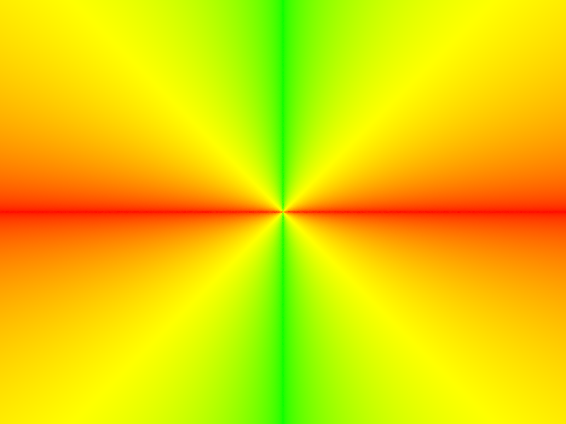 CBempty.dae: ray direction check. |

banana.dae: ray direction check. |

CBempty.dae: normal shading with ray-triangle intersection. |

CBspheres.dae: normal shading with ray-triangle and ray-sphere intersection. |
Part 2: Bounding Volume Hierarchy (17 Points)
BVH construction and splitting heuristic
I build the BVH recursively over a contiguous range of primitives, [start, end). For each
call I compute two boxes: the node's bounding box (the union of every primitive's AABB) and a smaller
box around just the primitives' centroids. If the range holds max_leaf_size (4) primitives or
fewer, the node becomes a leaf and simply stores start and end.
Otherwise I split along the axis where the centroid box is widest. My split point is the middle of the
centroid box on that axis. I partition the range in place: primitives whose centroid is below the split
go left, the rest go to the right. Splitting along the widest axis tends to separate primitives that really are
far apart, and splitting at the midpoint is generally cheap to compute. The midpoint can fail however if every
centroid lands on one side (for example, when many primitives are clustered together). In that case I fall
back to a median split with std::nth_element, which always puts half the primitives on each
side, so recursion always makes progress and cannot loop forever.
For traversal, when a ray hits both children's boxes I visit the closer one first, meaning the child with
the smaller entry t. A hit in the near child shrinks ray.max_t early, so the far
child can often be skipped entirely. (Part 6 notes will go into this in more detail.)
Normal shading on large scenes (BVH-accelerated)
|
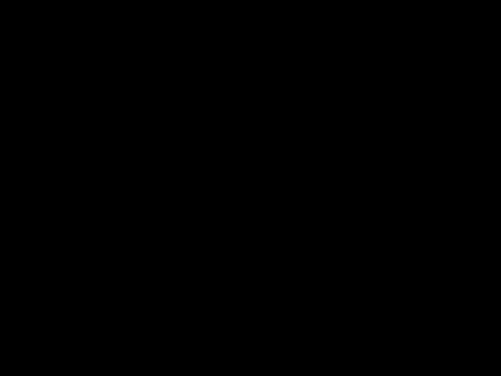 cow.dae: render progress without the BVH (brute-force intersection). |
cow.dae: render progress with the BVH. |
|
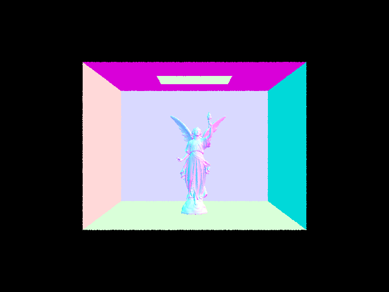 CBlucy.dae: a large, detailed mesh that is only practical to render with the BVH. |
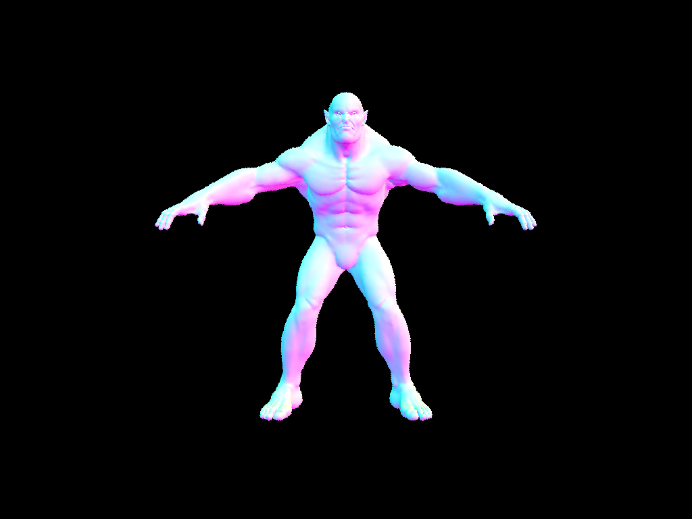 beast.dae: another high-poly mesh rendered with the BVH. |
Image generation note: The two cow.dae GIFs are supplementary. Their frames come from my timelapse capture tool
(Part 6), which reads the renderer's own framebuffer, and they are animated, so the submitted PDF may not perfectly represent the visualization.
Render times with and without BVH acceleration
| Configuration | Render Time (s) | Rays Traced | MRays/s | Avg. isects/ray |
|---|---|---|---|---|
cow.dae, no BVH (brute force) |
26.8751 | 479,770 | 0.0179 | 743.538704 |
cow.dae, BVH (recursive traversal) |
0.0694 | 442,612 | 6.3762 | 2.267092 |
cow.dae, BVH (iterative, near-child-first) |
0.0660 | 448,975 | 6.7985 | 1.181043 |
All timings were taken on cow.dae at 800×600 with -t 8. Without
a BVH, every ray is tested against every triangle, which averages about 744 intersection tests per ray and
takes almost 27 seconds. With the BVH, render time drops to 0.069 s (about 387× faster),
because most rays only reach a couple of triangles (about 2.27 tests per ray) after the bounding-box tests
throw out everything else. Visiting the nearer child first cuts that to 1.18 tests per ray and the time to
0.066 s (about 407× faster than brute force), since the closest hit tends to be found
early and more of the tree gets skipped. The speedup comes from reducing the number of tests: brute-force work grows
linearly with triangle count, while BVH traversal grows roughly with the log of the triangle count.
Scaling across scenes
To check how the BVH scales, I rendered three meshes of very different sizes with identical settings:
-t 8 -s 1 -l 1 -m 1 -r 800 600, iterative traversal with near-child-first ordering.
| Scene | Primitives | No BVH (s) | BVH (s) | Speedup | MRays/s (BVH) | Avg. isects/ray (BVH) |
|---|---|---|---|---|---|---|
cow.dae |
5,856 | 14.4957 | 0.0492 | ~295× | 9.6839 | 2.260171 |
maxplanck.dae |
50,801 | 148.4367 | 0.0651 | ~2,280× | 7.2398 | 3.235291 |
CBlucy.dae |
133,796 | 398.3280 | 0.0544 | ~7,320× | 9.6515 | 1.130211 |
The two approaches scale in very different ways. Without a BVH, render time tracks triangle count: going from the cow to Lucy is about 23× more triangles and about 27× more time (14.5 s to 398 s). With the BVH, render time barely depends on mesh size: Lucy renders in nearly the same time as the cow (0.054 s vs. 0.049 s), and every scene averages only 1–3.2 primitive tests per ray. As a result, the speedup grows with scene size, from about 295× on the cow to about 2,280× on maxplanck and about 7,320× on Lucy. A 6.6-minute render turned into 1/20s.
Note on GIF timing: the numbers in the table come from normal runs. The GIFs were recorded
with my timelapse capture (see Part 6), which saves viewport snapshots during the render. Each snapshot
reads the framebuffer back from the GPU (glReadPixels), flips it, and encodes a PNG to disk.
Those steps are synchronous and stall the render loop so the GIFs play back slower than the measured
render times.
Part 3: Direct Illumination (20 Points)
The two direct lighting implementations
Both estimators compute the light reflected toward the camera at a surface hit point from light that arrives directly from an emitter. They differ in how they pick incoming directions to sample.
Uniform hemisphere sampling (estimate_direct_lighting_hemisphere)
Here I take \(N\) = (number of lights) × ns_area_light samples of incoming directions, spread
uniformly over the hemisphere around the surface normal. For each direction, I convert it to world space and
cast a ray from the hit point with min_t = EPS_F so it doesn't hit the surface it starts on. If that ray hits an emissive surface, the surface's emission is the incoming
radiance \(L_i\). I combine the samples with the Monte Carlo estimator
\[
L_o \approx \frac{1}{N}\sum_{k=1}^{N}\frac{f(\omega_o,\omega_i^k)\,L_i(\omega_i^k)\,\cos\theta_k}{p(\omega_i^k)}
\]
with \(p(\omega_i)=\frac{1}{2\pi}\). The estimate is unbiased, but most random directions miss the light,
so many samples contribute nothing and the result is noisy.
Light importance sampling (estimate_direct_lighting_importance)
Instead of sampling the hemisphere, I loop over every light and sample points on it with
sample_L. That call returns a direction toward the light, the distance to it, the pdf, and the
emitted radiance. I skip samples that land behind the surface (\(\cos\theta \le 0\)). For the rest I cast a
shadow ray with min_t = EPS_F and max_t = distToLight - EPS_F; if nothing blocks
it, I add
\[
\frac{f(\omega_o,\omega_i)\,L_i\,\cos\theta}{\mathrm{pdf}}
\]
to that light's total. Each light's sum is divided by the number of samples taken for it: one for point
(delta) lights, since every sample would be identical, and ns_area_light for area lights. The
per-light results are then added together. Every sample is aimed at a light, so far fewer are wasted.
Images rendered with each implementation
| Uniform Hemisphere Sampling | Light Importance Sampling |
|---|---|
|
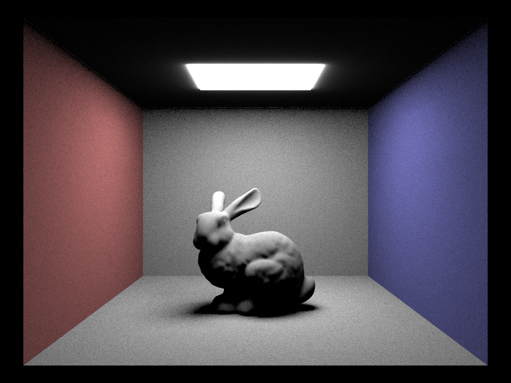 |
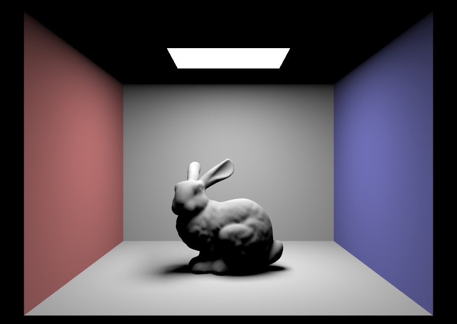 |

dragon.dae, uniform hemisphere sampling (-s 64 -l 32 -m 6 -H): completely black. The scene's light is a point light, and a randomly chosen direction never exactly hits a single point. |
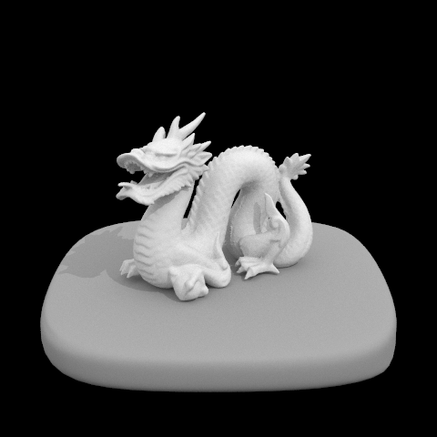 dragon.dae, light importance sampling (-s 64 -l 32 -m 6): fully lit, because the light is sampled directly. |
Soft-shadow noise vs. number of light rays (-s 1, light sampling)
For this comparison I used the Cornell box spheres scene, which is lit by an area light on the ceiling. I
kept one camera sample per pixel (-s 1) and changed only the number of light samples
(-l):
|
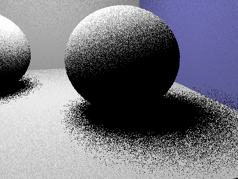 -l 1: one shadow ray per hit so each pixel in the penumbra is either fully lit or fully dark. |
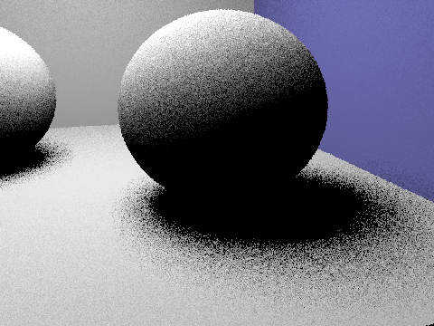 -l 4: the shadow edges start to show a gradient but are still grainy. |
-l 16: the soft falloff is easier to see. |
-l 64: smooth soft shadows. |
More light samples give each point a better estimate of how much of the area light it can see, and that fraction is exactly what decides the shadow's brightness in the penumbra. Monte Carlo noise falls off as \(1/\sqrt{N}\), so each 4× increase in light rays roughly halves the noise. That is why the jump from 1 to 4 looks much bigger than the jump from 16 to 64. With only one camera sample per pixel, the edges of the geometry stay aliased no matter how many light rays I use.
Uniform hemisphere sampling vs. light sampling
Both methods converge to the same answer, but light sampling gets there a lot faster. With uniform hemisphere sampling, directions are spread evenly over the hemisphere and when the light covers only a small part of the sky most rays miss it and return zero. The few rays that do hit the light produce large values, so neighboring pixels come out very different which shows up as heavy grain, especially in soft shadows. Light sampling only picks directions that point at a light, so nearly every sample (apart from the occluded ones) contributes, and at the same sample count the image is far cleaner. Hemisphere sampling also cannot render point lights at all, because a random direction has zero chance of hitting a single point. In my renders, the light-sampled images were consistently less noisy at matching settings.
Part 4: Global Illumination (25 Points)
Indirect lighting implementation
Indirect lighting lives in at_least_one_bounce_radiance, which follows one path through the
scene recursively. At each hit point I first add the direct lighting from one_bounce_radiance.
Then I call the BSDF's sample_f for a new incoming direction, which gives me the direction (in
local coordinates), the BSDF value \(f\), and the pdf. For the diffuse BSDF this is cosine-weighted hemisphere
sampling, with \(f = \text{albedo}/\pi\) and \(\text{pdf} = \cos\theta/\pi\). Directions near the normal,
which carry the most light, are therefore sampled more often. I convert the direction to world space and cast a new ray from the hit
point with min_t = EPS_F so it doesn't hit the surface it is leaving. The new ray has one less
depth (ray.depth - 1). If it hits something, I call the function again at that point and
weight the result by \(f(\omega_o,\omega_i)\cos\theta / (\text{pdf} \cdot p)\), where \(p\) is the Russian
Roulette continuation probability described next. If the ray escapes the scene and there is an environment
light, I use the environment's radiance instead.
Paths end in generally one of two ways. First, each camera ray starts with depth = max_ray_depth, and
when a hit has depth <= 1 I return only its direct lighting without recursing. Second, I use
Russian Roulette. The first indirect bounce is always traced, so every path with
max_ray_depth > 1 gets at least one bounce of indirect light. After that, each bounce
continues with probability \(p = 0.65\). That is a termination probability of 0.35. Surviving paths divide
their contribution by \(p\). Dividing by \(p\) makes up, on average, for the paths that were cut off, so
Russian Roulette adds no bias while making long paths increasingly rare.
The top-level function est_radiance_global_illumination traces the camera ray. With
isAccumBounces=true, it returns zero_bounce_radiance (light emitted straight toward
the camera) plus at_least_one_bounce_radiance, so every bounce from 0 up to the depth limit is
added together. With isAccumBounces=false, each level of the recursion returns only the light
passed up from the next level, and the deepest level returns its direct lighting. As a result,
at_least_one_bounce_radiance carries only bounce m. In this mode, emission is returned
only when m = 0, so each image in the isolated-bounce sets below contains exactly one bounce.
Global illumination renders (1024 spp)
CBbunny.dae, -s 1024 -l 4 -m 5 -o 1. |
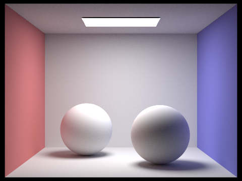 CBspheres.dae, global illumination at 1024 spp. |
Direct only vs. indirect only (CBbunny, 1024 spp)
To make these, I temporarily changed at_least_one_bounce_radiance to return only the direct
term or only the recursive (indirect) term.
| Direct Only | Indirect Only |
|---|---|
|
|
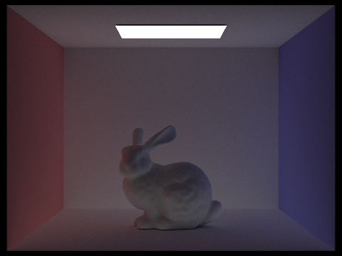 |
The direct-only image has hard contrast: surfaces facing the light are bright, and anything the light can't see, such as the ceiling and the shadow under the bunny, is pure black. The indirect-only image is dimmer and softer overall. It lights the ceiling and fills in the shadows, and it picks up color from the red and blue walls. Adding the two gives the full global illumination render above.
CBbunny, light from bounce m only (isAccumBounces=false, 1024 spp)
Each image shows only the light that reached the camera after exactly m bounces, for m = 0..5.
| m=0 | m=1 | m=2 |
|---|---|---|
|
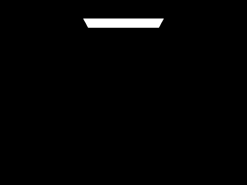 -m 0 -o 0 |
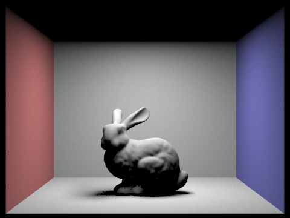 -m 1 -o 0 |
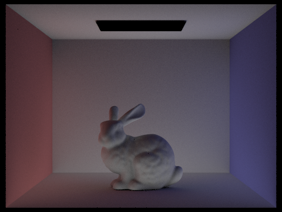 -m 2 -o 0 |
| m=3 | m=4 | m=5 |
|
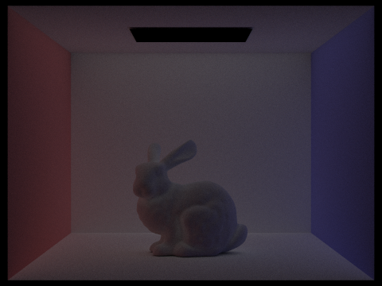 -m 3 -o 0 |
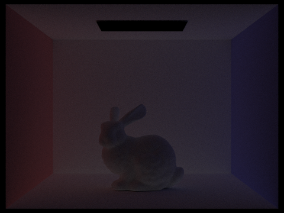 -m 4 -o 0 |
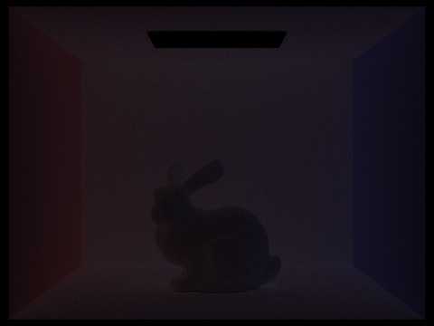 -m 5 -o 0 |
The 2nd and 3rd bounces: m = 0 is just the light source, and m = 1 is ordinary direct lighting. The second bounce is light that has reflected off one surface before lighting the point we see. It brightens areas the light can't reach directly, like the ceiling around the light and the undersides of the bunny, and it carries red and blue from the side walls onto the floor and the bunny (color bleeding). The third bounce is dimmer and smoother still, because some energy is absorbed at every reflection. It mostly adds a faint, even fill to corners and shadows. A rasterizer with local shading computes only the equivalent of m = 1, so those areas would come out black or get a flat ambient constant. The 2nd and 3rd bounces supply soft fill light, lifted shadows, and color bleeding, which is a large part of why the path-traced image looks real.
Accumulated vs. unaccumulated bounces (CBbunny, m=0..5, 1024 spp)
The left column shows only the light from bounce m. The right column shows the total of every bounce up to m. The isolated bounces get dimmer as m grows, so the accumulated image changes a lot from 0 to 2 and then very little after that.
| Depth m | Unaccumulated (-o 0) |
Accumulated (-o 1) |
|---|---|---|
| m=0 | 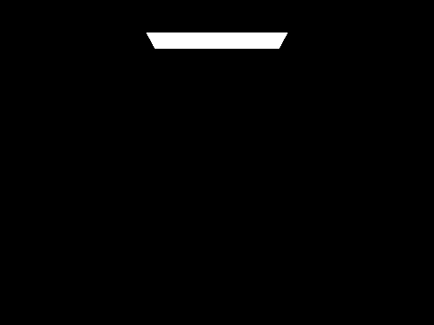 |
|
| m=1 | 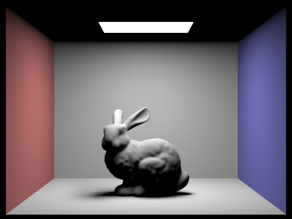 |
|
| m=2 | ||
| m=3 | ||
| m=4 | ||
| m=5 |
Russian Roulette renders (CBbunny, m=0, 1, 2, 3, 4, 100, 1024 spp)
These are rendered with Russian Roulette turned on. The image changes little past m = 4 or so, even with m = 100, because very few paths survive that many roulette checks and the light carried by later bounces is already tiny. Render time therefore grows only slightly with the depth limit.
| m=0 | m=1 | m=2 |
|---|---|---|
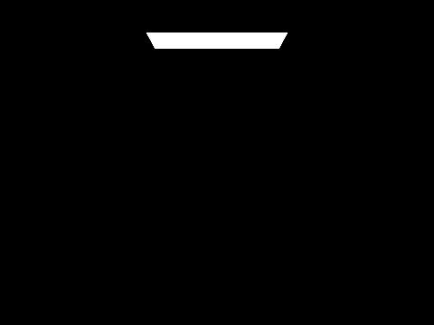 |
||
| m=3 | m=4 | m=100 |
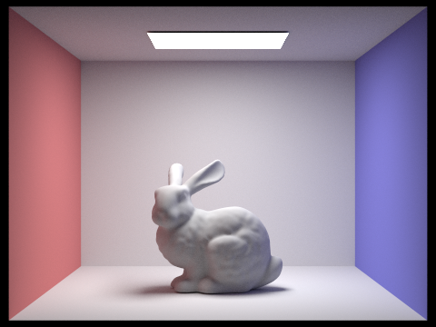 |
Samples per pixel (CBbunny, -l 4)
At 1 and 2 spp the image is covered in bright and dark speckles: each pixel follows only one or two random paths, and those paths may or may not reach the light. Each doubling of samples visibly reduces the noise. By 64 spp the overall shape and lighting are clear, but the shadows and indirectly lit areas are still a little grainy. At 1024 spp the image is smooth.
| s=1 | s=2 | s=4 |
|---|---|---|
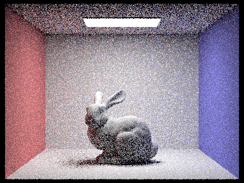 |
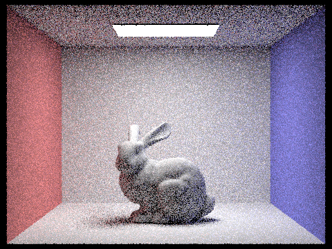 |
|
| s=8 | s=16 | s=64 |
| s=1024 | ||
Part 5: Adaptive Sampling (15 Points)
What adaptive sampling is, and how I implemented it
Some pixels converge after a handful of samples (a flat, evenly lit wall), while others need many more (a soft shadow edge). With a fixed sample count, the same budget goes to both. Adaptive sampling checks each pixel's estimate as it goes and stops once the estimate is statistically stable, so the remaining work goes to pixels that are still noisy.
In PathTracer::raytrace_pixel(...) I keep two running sums over each sample's illuminance
\(x_k = \text{illum}(L_k)\): s1 = Σx_k and s2 = Σx_k². Recomputing the mean and
variance after every sample would waste time, so I only check convergence after every
samplesPerBatch samples (64 in my runs). At each check I compute
\[ \mu = \frac{s1}{n}, \quad \sigma^2 = \frac{1}{n-1}\left(s2 - \frac{s1^2}{n}\right), \quad I = 1.96 \cdot \frac{\sigma}{\sqrt{n}} \]
where \(I\) is the half-width of a 95% confidence interval for the pixel's mean. The pixel is treated as
converged when
\[
I \le \text{maxTolerance} \cdot \mu
\]
with maxTolerance = 0.05. In other words, I stop when I'm about 95% confident the true value is
within 5% of the current estimate. If the test passes then sampling for that pixel ends. Otherwise it
continues until it hits ns_aa. Either way, I average over the n samples actually
taken and write n to sampleCountBuffer, which the sampling-rate images below
visualize.
Adaptive sampling results (2048 spp budget)
Both scenes were rendered with -s 2048 -l 1 -m 5 -o 1 -a 64 0.05. In the sampling-rate images,
each pixel's color shows the fraction of the 2048-sample budget it used. Blue means it stopped
very early, green means it used about half, and red means it used the full budget.
| Scene | Rendered Result | Sampling Rate |
|---|---|---|
| wall-e.dae |
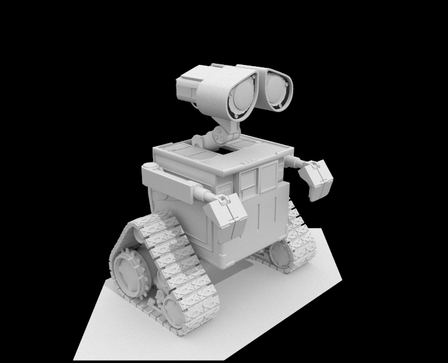 |
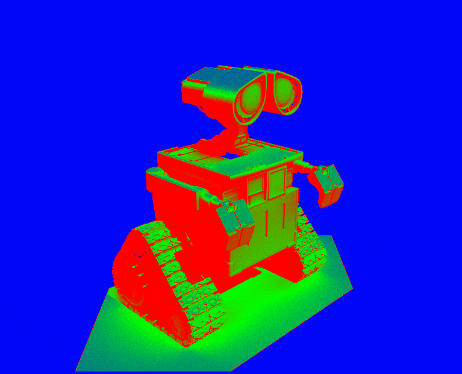 sampleCountBuffer. |
| bench.dae |
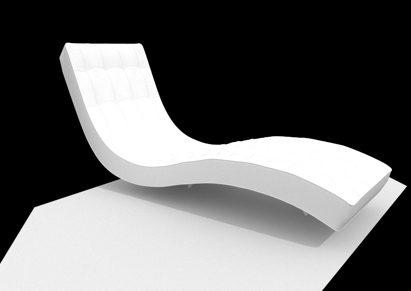 |
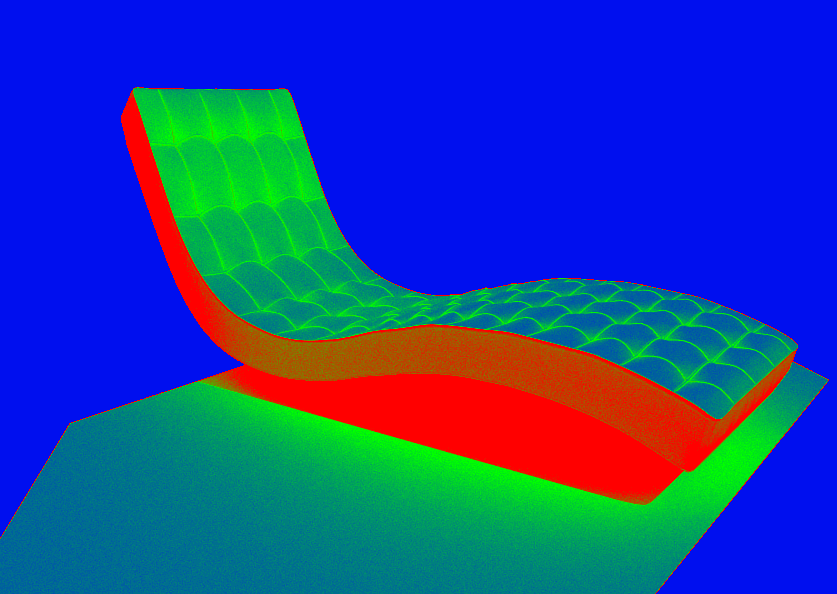 |
In both scenes, smooth, evenly lit surfaces stop early, while geometric edges, shadow boundaries, and dim indirectly lit areas keep sampling up to the full budget, since those are the places where individual samples disagree most. The final renders look very clean and sharp, but a large share of pixels finished well under 2048 samples, so the total work was lower than a uniform 2048 spp render.
Part 6: Extra Credit — Faster BVH Traversal and a Timelapse Capture Tool
1) Challenge Level 1: iterative, stack-based BVH traversal
I replaced the recursive BVH traversal with an iterative one in both BVHAccel::has_intersection
and BVHAccel::intersect. Each uses an explicit std::stack of nodes inside a
while loop. This avoids the overhead of recursive function calls and gives me direct control
over the order nodes are visited.
- Early rejection at the root: if the ray misses the root's bounding box, I return immediately without touching the stack.
- Near child first: at an interior node, I test both children's boxes against the ray's current
[min_t, max_t]and push only the children that were hit. If both were hit, I push the far child first and the near child second. The stack is last-in, first-out, so the near child (smaller entryt) is popped and visited first. - Re-test when a node is popped: each popped node's box is tested again against the current
max_t. If the near subtree has already produced a closer hit, the far child's box now starts beyondmax_t, and I skip the whole subtree without testing any of its primitives. - Same approach in both functions:
has_intersection(any hit, returns as soon as one is found) andintersect(nearest hit) traverse the same way.
Results on cow.dae (800×600, -t 8):
| Traversal | Render Time (s) | MRays/s | Avg. isects/ray |
|---|---|---|---|
| Recursive (baseline) | 0.0694 | 6.3762 | 2.267092 |
| Iterative + near-child-first | 0.0660 | 6.7985 | 1.181043 |
The iterative version is about 5% faster in wall-clock time (0.0694 s → 0.0660 s) and traces about 7% more rays per second. The bigger change is in intersection tests per ray, which drop by about 48% (2.27 → 1.18) because finding hits early lets more of the tree be skipped. The time gain is smaller than the drop in tests, probably because with the BVH a render this small is no longer dominated by triangle tests.
| Scene | Primitives | BVH Build Time (s, mean of 3 runs) |
|---|---|---|
cow.dae |
5,856 | 0.0030 |
maxplanck.dae |
50,801 | 0.0321 |
CBlucy.dae |
133,796 | 0.1071 |
Build time grows a little faster than the primitive count: about 23× more primitives (cow to Lucy) takes about 36× longer to build. That is roughly consistent with the expected \(O(n \log n)\) cost of a top-down build, where each of the roughly \(\log n\) tree levels does a linear pass over the primitives (\(n \log n\) predicts about 31×; the rest is plausibly cache effects at larger sizes). At 1 sample per pixel, Lucy's build (0.107 s) actually takes longer than its render (0.054 s). But the build happens once per scene, while traversal cost grows with every sample and bounce, so for real renders at hundreds or thousands of samples per pixel, traversal dominates.
2) Challenge Level 1, GUI feature (saving incremental results): timelapse auto-capture
I also added an automatic timelapse mode to the GUI, toggled with T, so I could record a
render in progress without taking screenshots by hand. The cow.dae GIFs in Part 2 were made
from these captures.
- While a render is running, frames are saved at regular intervals by reading back the framebuffer (
glReadPixels), flipping it vertically, and writing a PNG. - A final frame is saved automatically when the render finishes.
- Each session's frames go into their own timestamped folder under
captures/.
cow.dae without the BVH. |
cow.dae with the BVH. |
Capturing does slow the render down (see the note in Part 2), so all the timing numbers in this write-up come from runs with capture turned off. Neither addition changes the renderer's output; every main-assignment image comes from the standard CPU path tracer.